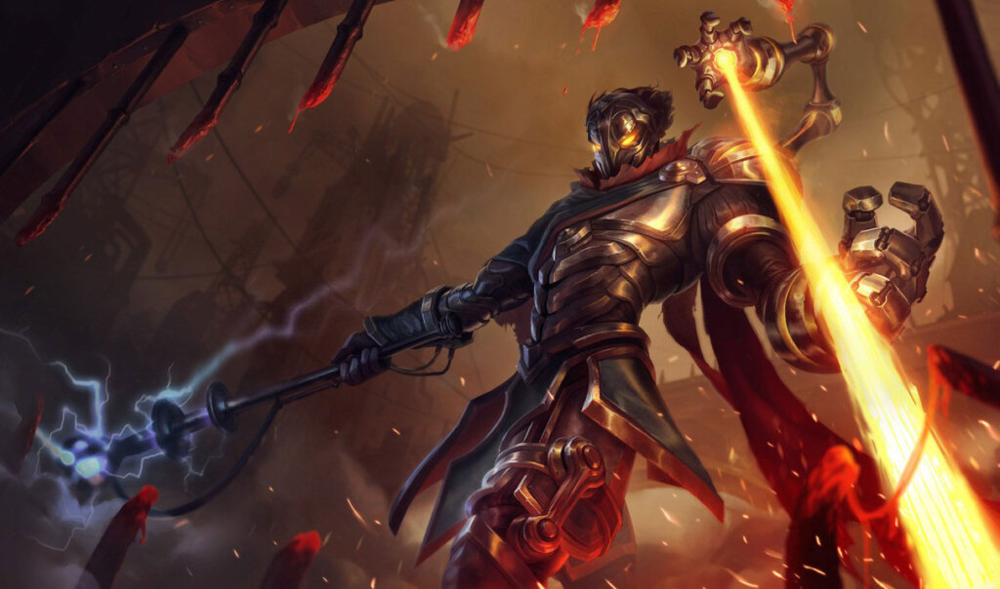

League of Legends: How to play Darius
Every week we explore a new League of Legends champion. This week we take on Darius, The Hand of Noxus.

Continuing our endeavors, here are three more champions that we will help you beat in your games.
Hasta La Vista, Baby
Ever wanted to try skull splitting? Especially enthusiastic about the French Revolution? Or simply just a Toplaner looking to kill their enemies in cold blood? In any of these cases, Darius is the champion for you, and here’s how to play him.
Learning The Basics
Darius is equipped with relatively simple abilities, but using them properly requires understanding and knowledge. Your passive is key when it comes to killing your opponent. Hitting them with abilities applies bleeding stacks, and once you get 5 stacks on an opponent, you’re ready to raise hell with your Ultimate, Noxian Guillotine. This is why it’s extremely important to efficiently build up stacks quickly.
Your primary tools for this will be your Q and W. Decimate (Q) lets you swing your axe around after a slight delay, hitting enemies around you, while dealing extra damage and applying a stack to those on the edge at the axe’s blade. Hitting enemies with the blade is extremely important to kill them quickly, so we have some nifty tricks to help you with that.
Your first basic combo will be: Auto Attack > W > Q. Because your W, Crippling Strike, is what we call an Auto Attack Reset, we’ll want to use it directly after Auto Attacking. This lets you efficiently stack bleeding stacks quickly. Because your W slows the target pretty heavily, we can use that slow to land an easy Q. Bad Darius players will very often use Q out of nowhere without slows or setup, often missing their target. This will leave Darius vulnerable, as without his Q, Darius may prove extremely weak.
The Pull-In Game
What if the enemy isn’t getting in range for you to do the basic combo? That’s where our pull-in ability, Apprehend (E), comes into play. By pulling the enemy into melee range, we can easily use the rest of our basic combo to start a fight. The combo evolves as follows:
E > Auto Attack > W > Q.
This combo is useful, but it has its flaws. When laning against enemies with dashes like Riven and Fiora, it may prove difficult to land the Q, as they will dash out of it, even if you slow them, and remember, without your Q, you’re vulnerable.
That’s why strong Darius players make sure to use their Apprehend (E) only when they really need to. Most of their all-ins aren’t started with Apprehend. Because champions like Riven and Fiora are always melee range, the best way to take them down, is to simply walk up, and hit them.